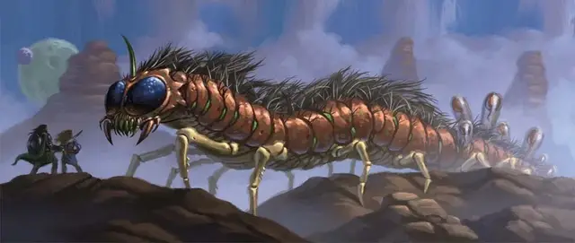

Меганожка
Megapede
Громадный Монстр, без мировоззрения

Класс Доспеха 15 (природный доспех)
Хиты 175 (13к20 + 39)
Скорость 40 футов, лазая 40 футов
| мод | спас | ||
|---|---|---|---|
| СИЛ | 22 | +6 | +6 |
| ЛОВ | 10 | +0 | +0 |
| ТЕЛ | 17 | +3 | +7 |
| мод | спас | ||
|---|---|---|---|
| ИНТ | 1 | −5 | −5 |
| МДР | 10 | +0 | +4 |
| ХАР | 3 | −4 | −4 |
Навыки Восприятие +8, Скрытность +4
Чувства тёмное зрение 120 футов, пассивное Восприятие 18
Опасность 11 (7200 опыта)
Бонус мастерства +4
Действия
Мультиатака. Меганожка совершает одну атаку Укусом и использует Вытягивание жизни или Психическую бомбу.
Укус. . Рукопашная атака оружием: +10 к попаданию, досягаемость 20 фт., одна цель. Попадание: 22 (3к10 + 6) колющего урона плюс 22 (5к8) урона ядом.
Вытягивание жизни. Меганожка магическим образом вытягивает жизненную энергию из других существ поблизости. Все существа в пределах 15 футов от меганожки должны совершить спасбросок Телосложения Сл 15, получая 16 (3к10) урона некротической энергией при провале или половину этого урона при успехе.
Психическая бомба. Меганожка выбирает в качестве цели одно существо, которое может видеть в пределах 60 футов. Цель должна совершить спасбросок Мудрости Сл 15. При провале, цель получает 22 (5к8) урона психической энергией и становится недееспособной до конца своего следующего хода. При успехе, цель получает половину этого урона и не становится недееспособной.
Описание
Меганожки — это огромные многоножки, которые могут достигать 150 футов в длину, хотя длина большинства экземпляров составляет от 100 до 120 футов. Их десятки ног имеют длину 5 футов каждая и снабжены гибкими когтями, а панцирь покрыт мехом. Меганожки, живущие в пустынной среде, часто зарываются в песок и ждут, когда поблизости появится добыча. Также они гнездятся в изобилующих пещерами подземных залах.
Укус меганожки ядовит. Кроме того, это существо обладает магическими способностями, которые делают его превосходным хищником. Оно может излучать невидимую ауру, поглощающую жизненную энергию, или же зафиксировать свой взгляд на одном существе и внедрить в его сознание психическую бомбу.
После того как меганожка отложит яйца, с помощью липкой слюны она прикрепляет их к своему телу, а затем носит на спине, пока потомство не вылупятся. Только что вылупившиеся меганожки вырастают до своего полного размера в течение нескольких недель, потребляя всё, что могут, в том числе и друг друга, если пищи не хватает.